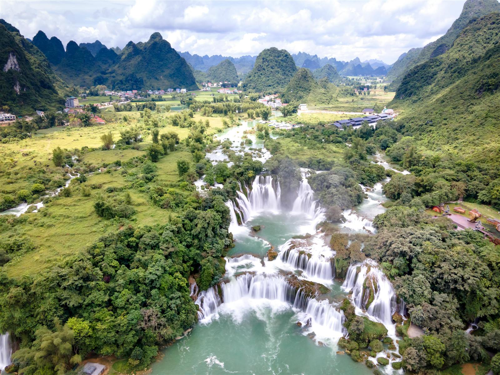

Cao Bang
A lesser-known province in Vietnam's remote north, famed for karst landscapes, trans-border waterfalls and rich revolutionary history.
Overview
Cao Bang Province is a lesser known province in the remote northern reaches of Vietnam. Famed for its breathtaking karst landscapes, cascading trans-border waterfalls and rich revolutionary history, Cao Bang is the perfect place for those seeking to experience the true authentic soul of Vietnam away from the crowds and off the beaten track, nestled amongst some of Vietnam's best untouched natural landscapes.
Highlights
- Ban Gioc Waterfall, one of the largest waterfalls in Asia, crossing the border between Vietnam and China
- Núi Mắt Thần (Angel Eye Mountain), a rare natural formation of a 50ft hole directly through the mountain
- Thang Hen Lake system, a vast water system home to 36 interconnected lakes
- Pac Bo Cave, the historical site where Ho Chi Minh spent time during the early Vietnamese Revolution
- Trúc Lâm Phật Tích Pagoda, a sacred temple overlooking Ban Gioc Waterfall
- The Cao Bang Loop, a 3–4 day motorbike excursion through ethnic villages and breathtaking landscapes
- Canh Cao Sinkhole, abseiling 150 metres into a cavern with a prehistoric rainforest at its base
Culture & Nature
Cao Bang is home to the Non Nuoc Cao Bang UNESCO Global Geopark, a 3,000-square-kilometre geological and cultural reserve. The Geopark features 500-million-year-old rock formations, vast protected waterways and sweeping agricultural land, and is home to ethnic minority groups such as the Tay, Nung, Dao and H'mong, whose communities still live in harmony with these striking natural landscapes.
Travel Tips
- Book the Cao Bang Loop — explore the Geopark over 3 days on the back of a motorbike, either self-driven or with an easy rider
- Interact with the local ethnic communities, rich with culture, tradition and ancient knowledge
- Book camping below Angel Eye Mountain in advance, it's a popular activity with limited availability
- Easiest to reach from Hanoi or Hà Giang, with direct bus routes available
Best Time to Visit
Visit between August and October for lush, vibrant green rice paddies and full, flowing waterfalls. March to April brings drier weather and better access to waterfalls and lakes thanks to lower water levels.
Plan Your Trip